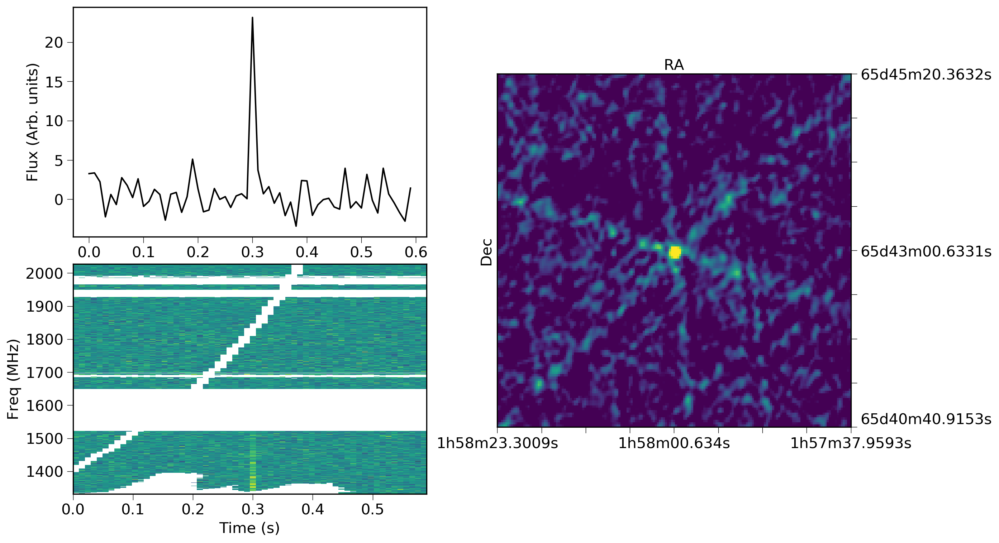

On 23 April 2020, the VLA/realfast system detected FRB 180916.J0158+65 during a test observation. Details are available in ATel xxxx
The realfast system continues to commensally search for fast transients during VLA observing. It is capable of searching continuum observations from 1-12 GHz and currently searches roughly 10% of VLA observing time.